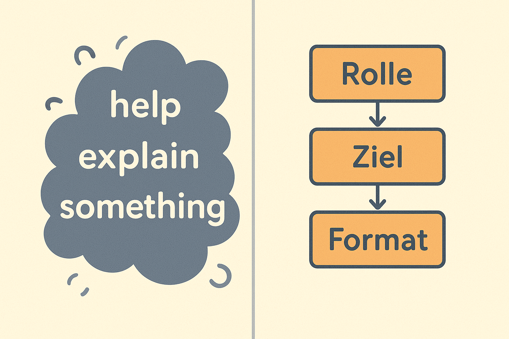
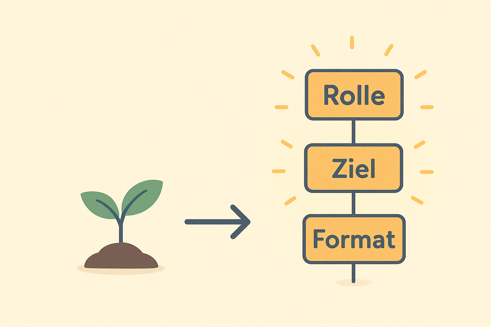

3 Deine ersten Prompts: Schnell Erfolge sehen
Wenn du dieses Kapitel liest, kommt jetzt der Moment, auf den viele junge Nutzer/-innen am meisten warten: die ersten echten Erfolge mit KI — schnell, einfach, ohne kompliziertes Wissen. Dieses Kapitel ist wie ein Power-Start: In wenigen Minuten wirst du merken, wie viel du schon mit einfachen Prompts erreichen kannst.
3.1 Warum dieses Kapitel wichtig ist
Viele Menschen denken beim ersten Kontakt mit KI: „Ich weiß nicht, was ich genau eingeben soll.“ Oder: „Ich habe Angst, dass mein Prompt schlecht ist.“
Die Wahrheit ist: Du kannst sofort Erfolge haben, wenn du ein paar Grundformeln kennst. Dieses Kapitel bringt dir:
- Sofort nutzbare Erfolgsrezepte
- Beispiele, die du direkt ausprobieren kannst
- Eine klare Unterscheidung zwischen guten und schlechten Prompts
- Eine Mini-Übung, die deine Fähigkeiten sofort verbessert
Du wirst merken: KI ist keine Magie — sie folgt Mustern. Wenn du lernst, diese Muster anzuspielen, fühlt es sich plötzlich leicht an.
Stell dir vor, du setzt dich an dein Handy oder Laptop. Du gibst deinen ersten Prompt ein. Und das Ergebnis ist so gut, dass du dir denkst:
„Oh wow! Ich kann das jetzt wirklich.“
Hier kommen die ersten Tools, um genau das auszulösen.
3.2 Die 3 einfachsten Prompt-Grundformeln (für Sofort-Erfolge)
Diese kleinen Formeln funktionieren fast immer — egal ob du etwas lernen, schreiben, erklären oder gestalten willst.
👉 Prompt-Formel 1: Das Rollen-Prinzip„Übernimm die Rolle von X und hilf mir mit Y.“
Beispiele:
- „Übernimm die Rolle eines freundlichen Mathe-Tutors und erklär mir Bruchrechnung so, als wäre ich 12.“
- „Übernimm die Rolle eines Social-Media-Coachs und formuliere einen witzigen Instagram-Post über Haustiere.“
Warum es funktioniert: Rollen geben der KI einen klaren Stil, eine Stimme und eine Perspektive — ohne komplizierte Anweisungen.
👉 Prompt-Formel 2: Das Ziel-Prinzip„Ich möchte Z erreichen. Erstelle mir eine einfache Erklärung / einen Plan / ein Beispiel.“
Beispiele:
- „Ich möchte lernen, besser Vokabeln zu behalten. Erstelle mir einen Lernplan mit täglichen Mini-Routinen.“
- „Ich möchte einen Text kürzen, ohne dass er langweilig wird. Kürze diesen Absatz auf 50 %, aber behalte den Humor.“
Warum es funktioniert: Ziele machen klar, wohin die KI arbeiten soll — nicht nur was sie sagen könnte.
👉 Prompt-Formel 3: Das Format-Prinzip„Gib mir die Antwort im Format: Liste / Tabelle / Schritte / Beispiel.“
Beispiele:
- „Erkläre mir das Photosynthese-Prinzip in 5 einfachen Schritten.“
- „Fasse diesen Artikel als Bullet-Points zusammen.“
- „Erstelle eine Tabelle mit 3 Gegenargumenten zu Social Media Detox.“
Warum es funktioniert: Je klarer das Format, desto besser die Struktur — und desto weniger musst du später nacharbeiten.
3.3 SOFORT-TEST: 3 Prompts, die fast immer funktionieren
Probier sie direkt aus:
„Erkläre mir [Thema] so, als wäre ich 14 und hätte nur 60 Sekunden Zeit.“
→ Klare Sprache + Tempo = super Ergebnisse.„Gib mir die 3 wichtigsten Dinge, die ich über [Thema] verstehen muss, und mach ein Beispiel für jeden Punkt.“
→ KI liefert Hauptideen + Veranschaulichung.„Verbessere diesen Text, aber behalte meine Stimme: [Text einfügen]“
→ Ideal für Hausaufgaben, Bewerbungen, Social Media, Projekte.
Du wirst feststellen: Diese Prompts sind nicht nur effektiv — sie fühlen sich sofort intuitiv an.
3.4 Der Unterschied zwischen guten und schlechten Prompts

Wenn jemand sagt: „ChatGPT ist schlecht“ - dann ist fast immer der Prompt schlecht.
Lass uns das sichtbar machen.
👉 ❌ Schlechter Prompt
„Erklär mir Evolution.“
Warum schlecht?
- zu allgemein
- kein Ziel
- kein Niveau
- kein Stil
- keine Richtung
Das Ergebnis wird: lang, zufällig, manchmal langweilig.
👉 ✔️ Guter Prompt
„Erklär mir Evolution so, als würde ich ein Comic darüber zeichnen wollen. Nutze kurze Beispiele, einfache Sprache und 3 bildhafte Vergleiche.“
Warum gut?
- klare Rolle
- klares Ziel
- kreativer Kontext
- Format-Anweisung
- Fokus auf Anschaulichkeit
Das Ergebnis: klar, kreativ, merkbar.
👉 ❌ Schlechter Prompt
„Schreib was über Motivation.“
👉 ✔️ Guter Prompt
„Schreib einen motivierenden Text für Schüler vor einer wichtigen Prüfung. Stil: freundlich, kurz, inspirierend. Baue eine einfache Metapher ein.“
💡 Mini-Merksatz:
Schlechte Prompts sind Wünsche. Gute Prompts sind Anleitungen.
Du musst nicht perfekt sein — du brauchst nur ein kleines bisschen Struktur.
3.5 Die Mini-Übung: 3 Prompts verbessern
Bevor wir in den folgenden Abschnitten mit noch mehr Tricks und Praxisbeispielen weitermachen, kommt hier deine kleine Skill-Challenge.
Du bekommst drei schlechte Prompts. Deine Aufgabe: Erkenne, was fehlt — und verbessere sie.
👉 Schlechter Prompt 1:„Mach meinen Text besser.“
Was fehlt?
- Tonfall
- Ziel
- Richtung
- Stil
- Kontext
Verbesserter Prompt:
„Verbessere diesen Text für ein Schulprojekt in Geschichte. Mach ihn klarer, flüssiger und ein bisschen spannender, aber behalte meine Schreibstimme bei. Hier ist der Text: […]“
👉 Schlechter Prompt 2:„Gib mir Tipps zum Lernen.“
Fehlt:
- Lerntyp
- Zeitrahmen
- Ziel
- Format
Verbesserter Prompt:
„Gib mir 5 Lern-Tipps für jemanden, der sich leicht ablenken lässt und morgen eine Klausur schreibt. Mach die Tipps kurz und direkt umsetzbar.“
👉 Schlechter Prompt 3:„Schreib ein Gedicht über den Winter.“
Fehlt:
- Stil
- Stimmung
- Perspektive
- Struktur
Verbesserter Prompt:
„Schreib ein kurzes, warmes Wintergedicht im Stil eines modernen Kinderbuchs, mit einfachen Bildern und einer kleinen überraschenden Wendung.“

3.6 Gute vs. schlechte Prompts – und warum das so wichtig ist
In der Welt der KI-Interaktion entscheidet oft nicht das Modell über Erfolg oder Misserfolg – sondern dein Prompt. Wenn du lernst, typische Fehler zu vermeiden und klare Strukturen zu nutzen, springt deine Ergebnisqualität sofort auf das nächste Level. In diesem Abschnitt gehen wir tiefer: Du lernst systematisch, wie du schlechte Prompts erkennst, warum KI darauf so empfindlich reagiert und wie du mit ein paar einfachen Prinzipien dauerhaft bessere Ergebnisse erzielst.
3.7 Warum schlechte Prompts schlechte Antworten erzeugen
Viele Probleme entstehen nicht, weil die KI „dumm“ ist, sondern weil sie dir genau das liefert, was du ihr gegeben hast – selbst wenn es unklar, unvollständig oder widersprüchlich ist.
Typische Schwachstellen schlechter Prompts:
- zu kurz („Erklär das.“)
- zu allgemein („Mach das besser.“)
- mehrdeutig („Schreib mir etwas über Banken.“ – aber welche Art? Für wen? In welchem Stil?)
- ohne Zielgruppe (Die KI weiß nicht, wie tief sie gehen oder welche Sprache sie verwenden soll.)
- ohne Format (Die KI weiß nicht, ob du einen Absatz, eine Liste oder ein Tutorial willst.)
- ohne Kontext (Die KI rät, statt sich an Fakten oder Anforderungen zu orientieren.)
Schlechte Prompts erzeugen Chaos – gute Prompts erzeugen Struktur. Und Struktur ist für LLMs wie Luft zum Atmen.
3.8 Die 3-Schritte-Verbesserungsmethode: Schlechte Prompts in starke Prompts verwandeln
Um schnell besser zu werden, brauchst du einen einfachen Prozess, den du immer wieder anwenden kannst. Diese 3-Schritte-Methode garantiert dir sofort bessere Ergebnisse – egal ob du Anfänger bist oder bereits Erfahrung hast.
👉 Schritt 1: Das Ziel definieren
Statt „Schreib mir einen Post über Motivation“ sagst du:
- Für wen?
- Wozu?
- In welchem Stil?
- Wie lang?
Beispiel:
„Erstelle einen motivierenden LinkedIn-Post für Berufseinsteiger, 120–150 Wörter, freundlicher Ton, klare Handlungsempfehlung.“
Eine kleine Ergänzung – ein gigantischer Sprung.
👉 Schritt 2: Rahmen und Format festlegen
Jede KI liebt Struktur. Beispiele:
- Listen
- Absätze
- Vorlagen
- Tabellen
- Bullet Points
- „Schritt-für-Schritt-Anleitung“
Wenn du das Format vorgibst, steigt die Qualität sofort.
👉 Schritt 3: Beispiele oder Stilvorlagen hinzufügen
Der unterschätzte Königsweg.
Die KI kann jeden Stil der Welt imitieren – aber nur, wenn sie weiß, welchen. Beispiele:
- „Schreibe im Stil einer einfachen, leicht verständlichen Online-Erklärung.“
- „Formuliere wie ein freundlicher Coach.“
- „Nutze kurze Sätze wie in TikTok-Skripten.“
Schon ein einziges Beispiel kann den Output radikal verändern.
3.9 Mini-Übung: 3 schlechte Prompts verbessern
Jetzt kommt der praktische Teil. Du bekommst gleich drei typische Anfänger-Prompts. Deine Aufgabe: Erkenne, was daran schlecht ist – und formuliere sie danach in guter Form neu.
Ich zeige dir zuerst die schlechten Beispiele, dann die verbesserten Versionen.
👉 ❌ Schlechtes Beispiel 1: „Schreib eine E-Mail.“
Warum schlecht?
- Kein Thema
- Keine Zielgruppe
- Keine Tonalität
- Kein Ziel
Die KI muss völlig raten.
👉 ✔️ Gutes Beispiel 1:
„Schreibe eine kurze, freundliche E-Mail (120–150 Wörter) an einen Kunden, der seit 6 Monaten kein Produkt mehr gekauft hat. Ziel: ihn zurückgewinnen. Ton: wertschätzend, hilfreich, ohne Verkaufsdruck. Format: Einleitung – 2 kurze Absätze – Abschluss mit klarer Einladung zum Gespräch.“
👉 ❌ Schlechtes Beispiel 2: „Erklär KI.“
Warum schlecht?
- Thema gigantisch
- Nicht definiert, für wen
- Kein gewünschtes Niveau
👉 ✔️ Gutes Beispiel 2:
„Erkläre einer 14-jährigen Schülerin in einfachen Worten, was Künstliche Intelligenz ist. Nutze kurze Sätze, ein alltagsnahes Beispiel und eine kleine Analogie aus der Schule.“
👉 ❌ Schlechtes Beispiel 3: „Mach das besser.“
Warum schlecht?
- Bezieht sich unklar auf Vorgängertext
- „besser“ kann alles bedeuten: länger, kürzer, anders?
- Kein Ziel, kein Format
👉 ✔️ Gutes Beispiel 3:
„Überarbeite den folgenden Text so, dass er klarer, strukturierter und motivierender wirkt. Nutze kurze Sätze, aktive Sprache und füge am Ende eine zusammenfassende Kernbotschaft ein.“
3.10 Sofort anwendbare „Rettungs-Prompts“ – für Situationen, in denen die KI Quatsch liefert
Selbst mit guten Prompts passiert es: Die KI antwortet zu oberflächlich, zu lang, zu vage oder einfach „daneben“. Hier bekommst du drei Universal-Prompts, die fast immer helfen, das Ergebnis zu retten, ohne neu anzufangen.
👉 Rettungs-Prompt 1: „Präzisieren“
Wenn die KI zu allgemein antwortet:
„Bitte präzisiere deine Antwort. Gehe detaillierter auf konkrete Beispiele ein und gib mindestens eine Schritt-für-Schritt-Erklärung.“
👉 Rettungs-Prompt 2: „Vereinfachen“
Wenn alles kompliziert klingt:
„Bitte erkläre das einfacher, als würdest du es einem 12-jährigen erklären. Nutze klare Beispiele und eine einfache Analogie.“
👉 Rettungs-Prompt 3: „Kontext nachreichen“
Wenn du merkst, du warst unklar – einfach ergänzen:
„Berücksichtige zusätzlich folgenden Kontext […]. Formuliere deine Antwort daraufhin neu und einheitlich.“
Die gute Nachricht: Man muss nicht perfekt sein. Gute Prompts sind eine Iterationsaufgabe, kein Sprint.
3.11 Mini-Workshop – Verbessere diese drei Prompts (mit Musterlösungen)
Damit du das Gelernte direkt festigst, bekommst du drei Praxisaufgaben. Du kannst sie selbst lösen – und anschließend meine Musterlösung nutzen, um dich zu vergleichen.
👉 Übungsprompt 1 – Ausgangslage
Schlecht:
„Schreib mir was über Nachhaltigkeit.“
Überlege:
- Wer soll es lesen?
- In welchem Format?
- Wie tief soll es gehen?
Musterlösung:
„Schreibe einen 150-Wörter-Erklärtext für Erwachsene ohne Vorwissen, der leicht verständlich beschreibt, was Nachhaltigkeit bedeutet. Nutze ein alltagsnahes Beispiel und eine übersichtliche Struktur (Einleitung – 2 Kernpunkte – kurze Zusammenfassung).“
👉 Übungsprompt 2 – Ausgangslage
Schlecht:
„Mach das lustig.“
Problem:
„Lustig“ ist subjektiv und ohne Kontext wertlos.
Musterlösung:
„Formuliere den folgenden Text humorvoll um. Verwende leichte Ironie, aber bleibe sachlich korrekt. Stil: lockerer Social-Media-Ton. Baue 2–3 unaufdringliche Wortspiele ein.“
👉 Übungsprompt 3 – Ausgangslage
Schlecht:
„Schreib ein Gedicht über Arbeit.“
Musterlösung:
„Schreibe ein kurzes Gedicht (4 Strophen à 4 Zeilen) über das moderne Arbeitsleben. Stil: leicht melancholisch, aber hoffnungsvoll. Sprache: klar, bildlich, ohne Reime, eher poetische Prosa.“
3.12 Dein WOW-Moment: Warum diese Techniken sofort wirken
Viele Menschen glauben, Prompt Engineering sei schwer – aber das Gegenteil ist wahr. Alles beginnt mit wenigen Basisprinzipien:
- Klare Ziele
- Klare Struktur
- Konkrete Sprache
- Beispiele
- Formatvorgaben
Wenn du diese Regeln befolgst, passiert Folgendes:
👉 1. Die KI versteht besser, was du willst.
Vage Prompts führen zu vagen Antworten. Präzision führt zu Präzision.
👉 2. Die KI produziert konsistent hochwertige Ergebnisse.
Du reduzierst Zufall – und bekommst wiederholbare Qualität.
👉 3. Du sparst enorm viel Zeit.
Gute Prompts = weniger Nacharbeit.
👉 4. Du bekommst professionell klingende Ergebnisse – ohne Profi sein zu müssen.
Das ist die Magie:
Du hebst deine Fähigkeiten sofort auf ein neues Level, ohne erst tagelang üben zu müssen.
3.13 Der wichtigste Gedanke dieses Kapitels
Wenn du die KI klar, konkret und zielgerichtet anleitest, bekommst du sofort deutlich bessere Ergebnisse. Schon kleine Verbesserungen in Struktur, Kontext und Beispielgebung erzeugen große Qualitätssprünge.
👉 Gute Prompts sind keine Kunst – sondern ein Werkzeug, das du Schritt für Schritt verfeinern kannst. Und je bewusster du formulierst, desto mehr entfaltet die KI ihr volles Potenzial für dich.
3.14 Ausblick auf Kapitel 4
Im nächsten Kapitel geht es um etwas, das die meisten Anfänger nie richtig nutzen:
👉 Die Bausteine eines starken PromptsWie Zutaten in einem Rezept.
Du wirst dort lernen:
- welche Teile ein guter Prompt hat
- warum manche Prompts funktionieren und andere nicht
- wie du deine eigenen „Prompt-Gewürze“ entwickelst
- wie professionelle Prompt-Designer arbeiten (ohne Fachbegriffe)
Kapitel 2 und 3 haben dein Grundverständnis aufgebaut.
Kapitel 4 zeigt dir die Tools, um wirklich loszulegen.